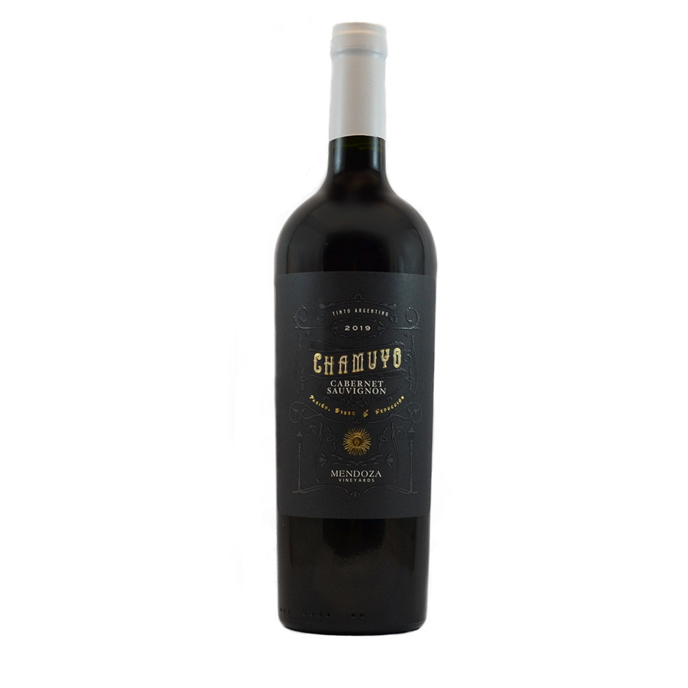
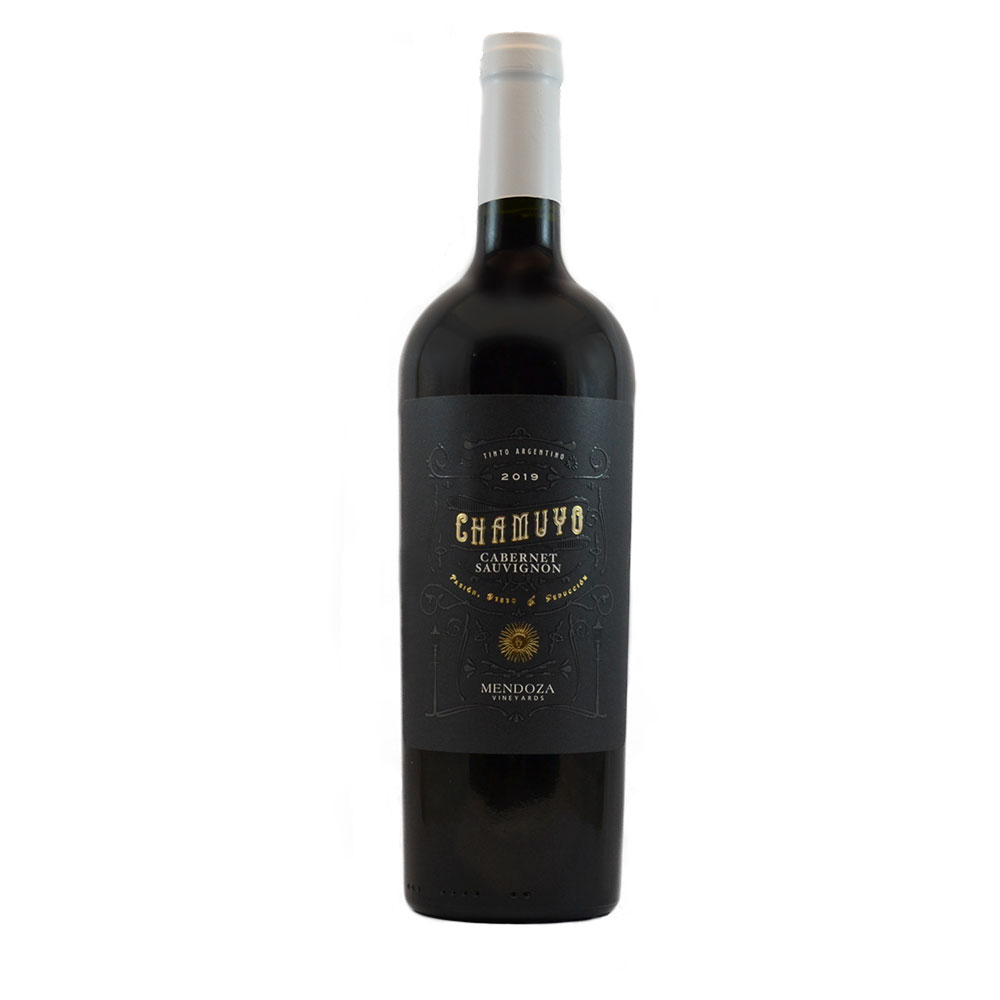

¿Cuántos tipos de vino tinto hay?
Existen diferentes tipos de vino tinto, estos se clasifica en grupos segun el tipo de uva utilizado y el proceso de envejecimiento.
Teniendo en cuenta su tiempo de envejecimiento, existen 4 tipos de vino tinto:
-Vino joven: Se lo conoce también como «vino del año» ya que se trata de un vino tinto que se consume antes de cumplir un año desde el momento de su elaboración.
-Crianza: Este tipo de vino tinto tiene un tiempo de envejecimiento de 24 meses como mínimo y 6 de ellos son en barrica.
-Reserva: Los vinos tinto de reserva tienen un tiempo de envejecimiento de 36 meses como mínimo, de ellos 12 meses deben ser en barrica.
-Gran reserva: El tipo de vino gran reserva tiene un envejecimiento de 5 años, de los que 18 meses deben ser en barrica.
Las características del vino tinto, en gran parte, se deben al tipo de uva empleado en su elaboración.
La uva Tempranillo es originaria de España, donde también recibe los nombres de «tinta del país» y la «uva noble» Más de un 60% de los viñedos de La Rioja son de Tempranillo, lugar donde nació a partir de las variedades Albillo mayor y Benedicto.
Recibe su nombre porque su maduración se adelanta en varias semanas a las restantes tintas españolas.
El vino Tempranillo (casi lo mismo que decir riojano) es oscuro, liviano, de larga vida y suave sabor, que recuerda a las cerezas. Puede consumirse joven, aunque mejora con varios años de añejamiento.
Deja en nariz aromas a ciruelas, moras, frambuesas, café y toques ahumados.
Los españoles lo descorchan a discreción con cordero, asados, pescados, embutidos, quesos suaves y pastas con salsas no muy pesadas.
Es una uva de maduración tardía, por lo que precisa de un clima seco y cálido. Por estas razones se cree que es originaria de España, aunque pudiera ser sarda, ya que crece muy bien en Cerdeña. También se da bien en California, Australia y el sur de Francia. El vino deja en el paladar un sabor suave y ligeramente picante, y la uva es frecuentemente utilizada en las mezclas para la elaboración de vinos rosados. Los vinos Grenache maridan bien con platos fuertes, como carnes y pescados de sabores penetrantes, quesos de larga maduración y ensaladas potentes.
Es la llamada «variedad camaleón» ya que puede desarrollar diferentes personalidades, dependiendo principalmente de si el clima del lugar en el que está el viñedo es más cálido o más frío. La cepa surgió en Burdeos mediante el cruce de Cabernet Franc y una antigua variedad gala de nombre Magdaleine Noire des Charentes.
Sus principales referencias territoriales mundiales son Saint Emillion y Pomerol, en Francia, y la Toscana italiana. La fruta es de rápida maduración, originando vinos de alta gradación alcohólica. Ofrece en nariz aromas a moras, grosellas y frutas rojas, y deja un gusto a ciruelas, uvas pasas y menta.
Se trata de un vino fuerte, frecuentemente empleado para iniciar a los principiantes en las catas. Marida adecuadamente con caza, guisos, quesos madurados, verduras y dulces.
Aunque la Pinot Noir se cultiva desde el primer siglo de nuestra era, se convirtió en la principal referencia mundial de la Borgoña francesa gracias a una hábil estrategia propagandística de la Casa de Valois, particularmente del duque Felipe II de Borgoña, durante la segunda mitad del siglo XIV. El viñedo produce unos racimos casi negros (de allí el «Noir») con las uvas muy apretadas adoptando una forma de piñas (de allí el «Pinot»). Es una uva que se da mejor en climas fríos y sus vinos están entre los más elegantes del mundo. El viñedo exige los máximos cuidados, pero puede ofrecer a cambio una cosecha sublime si se dan las condiciones óptimas. Su sinfonía de aromas incluye cuero húmedo, pomelos, fresas, frutos del bosque y vainilla. Marida exquisitamente con carnes blancas, cordero, quesos suaves, hongos y pescado, y es el preferido de los gourmets para acompañar la comida pan asiática.
La uva Syrah, también llamada Shiraz, surgió de un cruce entre la dureza y la mondeuse blanche, dos uvas oscuras del sureste francés, según comprobó inobjetablemente un análisis de ADN de 1999. Esta investigación científica desmontó el mito de que la cepa había llegado de Irán, donde se produce un vino de nombre «shirazi».
Se trata de una uva potente que comunica aromas florales, afrutados y ahumados. El vino es rojo profundo, muy rico en taninos, y combina maravillosamente con carnes a la brasa, cacería, guisos fuertes, potajes y quesos de carácter. También va muy bien con el chocolate.
La uva Zinfandel es europea y llegó a California a mediados del siglo XIX, absorbiendo actualmente una respetable cuota de la producción vinícola estadounidense, aunque es menos utilizada en el resto del mundo. Los tintos Zinfandel son robustos y de fuerte sabor, y los estadounidenses, siempre prácticos, embotellan un caldo semi dulce rosado, el White Zinfandel, que se vende mucho mejor que el tinto clásico.
La uva Zinfandel es algo díscola y dependiendo del clima, puede ofrecer sabores marcadamente diferenciados. En climas cálidos deja en boca sabor a pimienta, mientras que en regiones más frías recuerda a la frambuesa. Es muy popular por su versatilidad en el maridaje, combinando bien con carnes en diferentes modos de preparación, pastas, pizzas y otras comidas elaboradas con salsa de tomates.
¿Qué sería de los argentinos sin el fútbol, sus tiernas carnes y la uva Malbec? La Malbec nació en la antigua provincia francesa de Quercy, cerca de la comuna de Cahors, de la mano de Monsieur Malbeck, de quien tomó el nombre. Es un fruto de color oscuro y con abundantes taninos, cuya cepa se adaptó muy bien a la Argentina, originando el varietal más popular del país del tango.
Una helada de 1956 devastó los viñedos Malbec de Burdeos y desde entonces el principal centro productor francés de la uva es Cahors. El Malbec es un vino entintado que deja en boca un sabor a moras y ciruelas negras. La uva argentina es un poco distinta a la francesa, con taninos maduros y sabores más afrutados. El vino Malbec marida muy bien con carne de res, cordero y verduras.
Uno de los aciertos más trascendentales en la historia de la industria vitivinícola se produjo en el siglo XVII en el suroeste de Francia, cuando surgió la uva Cabernet Sauvignon mediante un cruce entre la Cabernet Franc y la Sauvignon Blanc. La nueva cepa resultó ser muy adaptable a distintos tipos de clima, así como altamente resistente a la humedad y a los ataques de los insectos.
Actualmente, el Cabernet Sauvignon es el más conocido y popular vino de Burdeos, así como de otras regiones vitivinícolas en Europa, América y Australia. Los tintos Cabernet Sauvignon se sienten hierbales en boca por su nivel de taninos y acompañan muy bien pastas, lasañas, aves, cacería, carnes asadas y una amplia gama de quesos. La uva Cabernet Sauvignon es muy utilizada para mezclas de gran personalidad.
 
